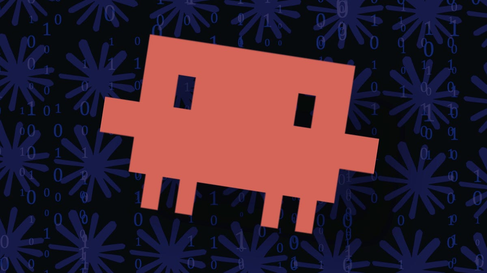

138 位開發者調查出爐：Cost、Workflow、Ecosystem 與代碼質量同等重要

138 位開發者調查顯示，75% 偏愛 Claude Code，揭示 AI 編程工具選擇的關鍵因素不僅是代碼質量，還包括成本、工作流程整合與生態系統。
Claude Code 能將大型代碼庫保存在上下文，使跨多個文件的改動保持一致性，特別適合複雜重構場景。
Claude Code 在進行編輯前會先規劃和推理，因此在複雜重構時只需較少修正，減少來回調整的時間。
在同一任務上，Claude Code 產生更好的原始代碼質量與推理能力，但 Codex 在速度上仍有優勢。
Claude Code 可在終端中以代理方式操作真實代碼庫和基礎設施，而非只在編輯器內提供自動完成。
調查中 75%（約 104 人）偏愛 Claude Code，但 Codex 在性價比（7%）、工作流程整合（6%）、穩定性（5%）方面仍有優勢。成本與工作習慣同樣是關鍵決策因素。
「我偏好 OpenAI Codex，用於安全和網絡安全軟體、測試、研究自動化及部署。我特別喜歡它能乾淨地處理跨代碼和基礎設施的工作。而且同樣價格下 OpenAI 提供更多用量，我從不耗盡 tokens。」
— Chris Seymour，GS Consulting 創辦人這項調查揭示 AI 編程工具的選擇不僅取決於代碼質量。成本、工作流程整合、穩定性與生態系統成熟度同樣關鍵。專家指出，無論選擇哪款 AI 工具，人類審查仍是不可或缺的環節。隨著 Claude Code 和 Codex 的競爭加劇，開發者將有更多優質選擇。
| 維度 | Claude Code | OpenAI Codex |
|---|---|---|
| 用戶偏好度 | 75%（主導） | 25% |
| 核心優勢 | 上下文理解、規劃推理、多代理工具 | 性價比、工作流程整合、穩定性 |
| 適用場景 | 複雜重構、大型代碼庫、多代理任務 | 快速開發、跨代碼與基礎設施工作 |
| 定價 | 有每週用量限制 | 同價更多用量，無限制 |
| 生態系統 | Skills、MCP、Subagents 成熟 | 仍在追趕階段 |